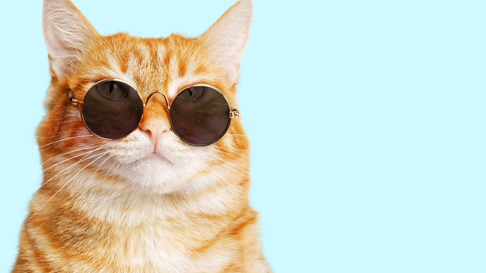

1. อเมริกัน ช็อตแฮร์ (American Short Hair)
มีนิสัยที่อ่อนโยน สุขุมห้วง และมีความคล่องแคล่วในการปรับตัวต่อสภาพแวดล้อม

2. บริติช ช็อตแฮร์ (British Shorthair)
มีนิสียเงียบ เรียบง่ายและนิ่งเฉย ไม่ค่อยกระตือรือร้น

3. สก็อตติช โฟลด์ (Scottish Fold)
นิสัยน่ารัก อบอุ่น ขี้เล่นและชอบอยู่ใกล้กับคน
4. มันช์กิ้น (Munchkin)
นิสัยน่ารัก รักอิสระ และชอบการเคลื่อนไหว
5. เบงกอล (Bengal)
นิสัยเชื่อมั่นในตัวเอง ชอบการเล่น และชอบกิจกรรมที่ต้องใช้พลังงาน
6. อเมริกัน เคิร์ล (American Curl)
นิสัยเป็นมิตร ชอบเล่น รักในการเรียนรู้และมีความฉลาด
7. เอ็กโซติก ช็อตแฮร์ (Exotic Shorthair)
นิสัยชอบเล่น อ่อนโยน และมีความรัก ความอุ่นใจต่อคน
8. เปอร์เซีย (Persian)
นิสัยรักสงบ ไม่ค่อยสุงสิง และรักความเป็นส่วนตัว

9. เมนคูน (Maine Coon)
นิสัยอ่อนโยน อารมณ์ดี อบอุ่นและชอบเล่นกับคน
10. แร็กดอลล์ (Ragdoll)
นิสัยอ่อนโยน เป็นมิตร และมีความเชื่อมั่นในตัวเอง
About me ,Cat lover

I Like Cats
เกร็ด แมว แมว
แมวบ้านกระโดดได้สูงถึง 5 เท่าของความยาวลำตัว แมวลายหินอ่อนมีหางที่ยาวถึง 3 ใน 4 ของความยาวลำตัว เพื่อช่วยในการปีนป่ายและทรงตัว แมวบ้านไม่มีกระดูกคอและกระดูกสะบัก จึงสามารถผ่านช่องแคบๆ ได้ แมวลายหินอ่อนมีการมองเห็นที่คล้ายกับกล้องส่องทางไกล การดูดหรือเคี้ยวผ้าของแมวบ้านเป็นพฤติกรรมที่ผิดปกติ สาเหตุส่วนหนึ่งมาจากความบกพร่องทางพันธุกรรม แมวลายหินอ่อนจะโตเต็มที่ในระยะเวลา 2 ปี ลูกแมวบ้านจะได้รับการดูแลจากแม่เป็นระยะเวลา 8 สัปดาห์ แมวลายหินอ่อนจะเคลื่อนไหวอย่างอิสระหลังจากอายุ 65 วัน